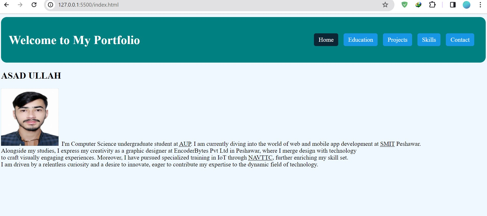

Project Overview:
In addition to showcasing my personal information and professional journey, I've also included a section highlighting
one of my noteworthy projects. The project featured in my portfolio encompasses the development of a dynamic web application
aimed at streamlining data management processes for a local business.
Project Pictures:
Within the portfolio, you'll find visual representations of the project, offering a glimpse into its user interface and design
aesthetics. These images capture various aspects of the application, including its homepage, data entry forms, interactive charts,
and analytical dashboards.
Work and Functionality:
The project involved extensive collaboration with the client to understand their specific requirements and challenges. Through
iterative development cycles, I implemented features such as user authentication, data validation, and real-time data visualization.
The application's functionality extends to data retrieval, editing, and reporting, empowering users with comprehensive data management
capabilities.
Technologies Used:
To bring this project to fruition, I leveraged a combination of front-end technologies. The user interface was crafted
using HTML, CSS.